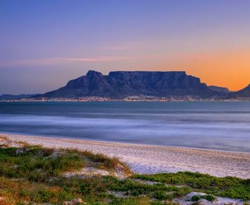
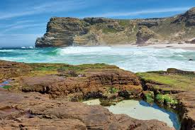

Landmarks
South Africa is home to many iconic landmarks, from historical sites to natural wonders. Here are some of the most famous landmarks:



1. Democratic Principles and Multi-Party System
South Africa is a parliamentary democracy, with a Constitution hailed as one of the most progressive globally.
The country operates under a multi-party system. However, the African National Congress (ANC) has dominated national politics since 1994, advocating for transformation, racial equality, and economic inclusivity.
1. Ethnic and Cultural Diversity
South Africa has 11 official languages and multiple ethnic groups, each contributing to its rich cultural fabric:
Nguni-speaking groups: Zulu, Xhosa, Swazi, and Ndebele people are known for their traditions, music, beadwork, and dances.
Sotho-Tswana groups: The Sotho, Tswana, and Pedi communities are celebrated for their craftsmanship, storytelling, and vibrant music.
Khoisan communities: The Khoikhoi and San are among South Africa's earliest inhabitants, known for their traditional hunting and rock art.
Indian South Africans: Introduced during British colonial rule, they have contributed to South Africa's cuisine, religion (especially Hinduism and Islam), and business culture.
Afrikaners and English South Africans: Descendants of European settlers, they have influenced South African art, literature, and architecture.
1. Economic Sectors
Services (63%): The largest contributor, encompassing finance, real estate, tourism, and retail.
Industry (30%): Includes mining, manufacturing, and construction. Mining is a critical sector, with South Africa being a leading global producer of gold, platinum, and diamonds.
Agriculture (7%): Plays a smaller role but remains essential for rural livelihoods. Key exports include fruits, wine, and maize.
1. Official Languages: South Africa has 11 official languages, making it one of the most multilingual countries in the world. These are:
Afrikaans
English
IsiNdebele
IsiXhosa
IsiZulu
Sepedi (Northern Sotho)
Sesotho (Southern Sotho)
Setswana
SiSwati
Tshivenda
Xitsonga
Black African: This is the largest ethnic group, comprising approximately 80% of the population. It includes several distinct cultural and linguistic groups:
Zulu: The largest ethnic group, primarily found in the KwaZulu-Natal province.
Xhosa: Predominantly in the Eastern Cape and Western Cape.
Sotho: Divided into three groups - Northern Sotho (Sepedi), Southern Sotho, and Tswana.
Tsonga: Mostly found in Limpopo and Mpumalanga.
Swazi: Concentrated in Mpumalanga.
Ndebele: Found in Mpumalanga and Gauteng.
Venda: Mainly in Limpopo.
South Africa is home to many iconic landmarks, from historical sites to natural wonders. Here are some of the most famous landmarks:
South Africa has a unique approach when it comes to capital cities. Instead of just one, it has three separate capitals, each with its own distinct role:
Pretoria: The administrative capital. This is where the executive branch of the government, including the President's office and the Union Buildings, is located.
Cape Town: The legislative capital. The Parliament of South Africa convenes here.
Bloemfontein: The judicial capital. The Supreme Court of Appeal is based in this city.
South Africa has several well-known universities, including:
South Africa has a number of key ministers in its government. Here are some of the prominent figures:
Siviwe Gwarube
Enoch Godongwana
Patricia de Lille


South Africa's GDP performance has been quite varied over recent years. Here are some key points:
2023: The economy grew by a marginal 0.6% for the year. The fourth quarter saw a slight increase of 0.1%
2024: In the second quarter of 2024, the GDP grew by 0.4% compared to the previous quarter. On a yearly basis, the GDP rose by 0.3% in Q2.
Sector Performance: The finance, real estate, and business services sector led the growth in Q2 2024, contributing 0.3 percentage points. Other significant contributors included trade, manufacturing, and the electricity, gas, and water sectors
Challenges: Despite some positive growth, South Africa faced challenges such as load-shedding (rolling blackouts) and a decrease in fixed investment
South Africa's economy is the most developed in Africa, with services accounting for around 73% of GDP. The finance, real estate, and business services sector is the largest within services, contributing 21.6% to GDP